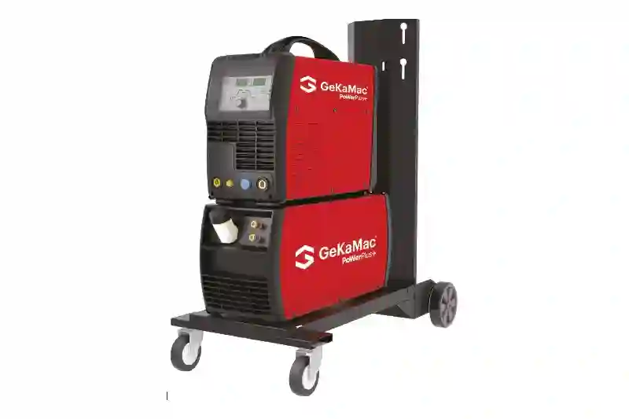
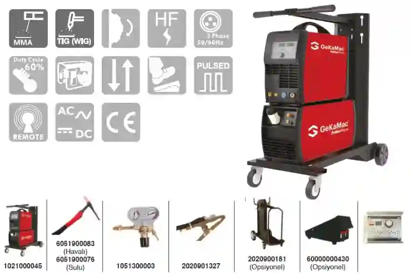

TIG Kaynak Makinesi PoWerPlus TIG 320 AC/DC PulseAymaksan Makine Parkı’nın Hassas Kaynak Gücü
Aymaksan Makina Parkı’nda yer alan TIG Kaynak Makinesi PoWerPlus TIG 320 AC/DC Pulse, endüstriyel metal imalat süreçlerinde yüksek hassasiyet, kontrollü ısı yönetimi ve üstün kaynak kalitesi sunan profesyonel bir teknoloji olarak öne çıkmaktadır. Özellikle alüminyum ve magnezyum gibi ısıya duyarlı hafif alaşımların yanı sıra paslanmaz çelik ve karbon çelik gibi yoğun işlenen malzemelerde sağladığı kararlı ark yapısı, makinenin üretim kapasitemizde kritik bir yer edinmesini sağlamaktadır. Bu makineyi Makine Parkımız kategorisine dahil etmemizin temel nedeni, üretim kalitesini artırması ve geniş bir malzeme gamında standartlaştırılmış kaynak performansı sunmasıdır.
PoWerPlus TIG 320 AC/DC Pulse, inverter tabanlı güç ünitesi, IGBT modülü, pulse kontrollü TIG ark yapısı ve AC balance ayarları ile hem hassas hem de yoğun yük altında çalışan endüstriyel ortamlara uygun bir yapıda geliştirilmiştir. Bu makinenin sağladığı yüksek akım kapasitesi, ince cidarlı parçalardan kalın kesitli metallere kadar farklı iş parçalarında istikrarlı ve temiz bir kaynak dikişi elde edilmesine olanak tanır. Özellikle üretim süreçlerinde alüminyum kaynağının kritik olduğu sektörlerde AC modunun sağladığı temizlik etkisi ve kontrol edilebilir ısı girişi, Aymaksan Makina’nın üretim kalitesini bir üst seviyeye taşımaktadır.
Endüstriyel Kaynak Teknolojisinde TIG Kaynak Makinesi PoWerPlus TIG 320 AC/DC Pulse’ın Yeri
Endüstriyel metal işleme dünyasında TIG kaynağı, hassasiyet gerektiren kritik bileşenlerin birleşiminde en güvenilir yöntemlerden biridir. Bu nedenle PoWerPlus TIG 320 AC/DC Pulse, özellikle prototip üretim, özel imalat parçaları, ince sac metal bileşenleri, alüminyum gövdeler ve hassas ölçü toleransına sahip parçaların birleştirilmesi gibi Aymaksan Makina’da sıkça karşılaşılan üretim gereksinimlerine doğrudan yanıt vermektedir. Pulse TIG özelliği, ısı girdisini minimize ederek deformasyon riskini düşürür ve kaynak dikişinin mikro yapısal bütünlüğünü korur.
Burada yalnızca klasik TIG kaynağından bahsetmek mümkün değildir; çünkü bu makine aynı zamanda kontrollü, modern bir AC/DC platformu sunmaktadır. Özellikle alüminyum kaynağında AC dalga formunun şekillendirilebilmesi, operatörün metalleri daha temiz ve daha düzgün bir yüzeyle işleyebilmesine imkân verir. Bu durum, hem prototip hem de seri üretim süreçlerinde kalite standardının korunması açısından büyük avantaj sağlar.


Aymaksan Makina’nın Üretim Süreçlerinde Sağladığı Avantajlar
TIG Kaynak Makinesi PoWerPlus TIG 320 AC/DC Pulse’ın firmamızdaki kullanım amacı, yalnızca bir kaynak işlemi gerçekleştirmek değil; aynı zamanda üretilmeye aday parçaların mukavemet, bütünlük ve kalite standartlarını yükseltmektir. SB-20R Tip G otomatik torna ile üretilen hassas bileşenlerin kaynak sonrası montaj süreçlerinde bu makine, tolerans uyumunu bozmayacak şekilde işlev göstermektedir. Dahlih MCV-1450 dik işleme merkezi ile işlenen çelik ve alüminyum parçaların birleştirilmesinde ise TIG kaynağının sunduğu düşük sıçrantı ve estetik dikiş yapısı fark yaratmaktadır.
Ayrıca makinenin MIG/MAG kaynak makinelerinde olduğu gibi yüksek ısı girdisi üretmemesi, TOS SUI 50 Universal Torna ile işlenen büyük çaptaki parçaların revizyon süreçlerinde şekil bütünlüğünün korunmasını sağlar.
Bu yüzden PoWerPlus TIG 320 AC/DC Pulse, makine parkımızın stratejik bir güç unsuru haline gelmiştir.
AC/DC Pulse TIG kaynak makinesi özellikleri
Akım Türü
- AC / DC AC/DC
Ekstra Fonksiyonlar
- MMA Arc Force / Hot start, Düşük akımlarda dahi dalga kontrol fonksiyonu sayesinde ark kararlılığı
- Ön Gaz / Son Gaz / Çıkış Akım / İniş Akım, Çeşitli dalga formları ile çalışma imkanı (kare, sinüs, üçgen), Al kaynağında AC Balance fonksiyonu
- Bitiş Akımı / Başlangıç Akımı, 2T / 4T Tetikleme Mod, Pulse fonksiyonu ile çok ince malzemelerde dahi yüzey deformasyonsuz kaynak imkanı
Koruma Fonksiyonları
- Isıl koruma
- Yüksek akım koruması
- Yüksek gerilim koruması
Verimli Çalışma
- Maksimum verimlilikte çalışma
- Düşük enerji tüketimi
- Jeneratör ile çalışmaya uygun
- Dijital ekranlı gösterge ve akıllı potansiyometre ile hassas akım ayarlama imkanı
- Anlık kaynak akımı ölçme-gösterme
- ± % 10 Enerji dalgalanmalarından etkilenmeme
- AC Frekans (50 – 250) ayarlama imkanı
Estetik Tasarım
- Plastik ön ve arka panel
- Darbelere ve ağır şartlarda çalışmaya dayanıklı tasarım
- Soğutma ünitesi ve taşıma arabası seçenekli (Opsiyonel)
- Kablosuz uzaktan kumanda ünitesi imkanı
TIG Kaynak Makinesi PoWerPlus TIG 320 AC/DC Pulse – Teknik Özellikler
Projeni Başlat
TIG Kaynak Makinesi PoWerPlus TIG 320 AC/DC Pulse ile Hassas Kaynak İşlemlerinde Üstün Kontrol
TIG Kaynak Makinesi PoWerPlus TIG 320 AC/DC Pulse’ın Aymaksan Makina Parkı içerisinde seçilmesinin en belirgin sebeplerinden biri, operatöre sunduğu kontrol çeşitliliğidir. Kaynak işlemlerinde kontrol yalnızca akım ayarıyla sınırlı değildir; aynı zamanda ısı dağılımı, pulse modu davranışları, arc stabilitesi, tungsten elektroda uygulanan güç, AC balance ayarları ve başlangıç-bitiş rampaları gibi daha detaylı parametreler üzerinden de belirlenir. Bu makine, tüm bu ayarların hassas biçimde şekillendirilebilmesine olanak sağlayarak hem ince sac hem de kalın kesitli parçalarda temiz, mukavemetli ve deformasyondan uzak bir kaynak yapısının elde edilmesini sağlar.
Özellikle alüminyum ve magnezyum gibi ısıya duyarlı malzemelerde AC modunun sunduğu temizlik etkisi, iş parçası üzerinde oksit tabakasının kırılmasını ve daha kararlı bir ergime havuzu oluşmasını mümkün kılar. Bu durum, üretim süreçlerinde alüminyum gövde sistemleri, CNC işleme sonrası montaj gerektiren hafif alaşımlar ve prototip çalışmaları gibi alanlarda önemli bir kalite standardı yaratır.
Aynı zamanda DC modunun sunduğu yüksek nüfuziyet kabiliyeti, paslanmaz çelik, karbon çeliği ve alaşımlı çelikler üzerinde kesintisiz bir kaynak dikişi elde edilmesini sağlar. Bu çeşitlilik, Aymaksan Makina’nın geniş üretim portföyünü destekleyen en önemli avantajlardan biridir.
Üretim Süreçlerinde Entegrasyon – Torna ve İşleme Merkezleri ile Uyum
Aymaksan Makina Parkı içerisinde yer alan farklı üretim tezgâhları, birbiriyle entegre çalışan bir üretim ekosistemi oluşturur. Özellikle hassas iş parçası üretimi yapan SB-20R Tip G CNC otomatik torna, yüksek hızlı talaşlı imalat sağlayan PUMA 280L CNC Torna, geniş işlem hacmine sahip Dahlih MCV-1450 dik işleme merkezi ve ağır işleme kabiliyeti sunan TOS SUI 50 Universal Torna ile birlikte çalışan TIG Kaynak Makinesi PoWerPlus TIG 320 AC/DC Pulse, işlenen parçaların birleştirilmesinde kritik bir rol üstlenir.
Bu entegrasyon şu avantajları sağlar:
Hassas Parça Uyumunun Korunması
Özellikle SB-20R Tip G ile üretilen küçük çaplı, hassas parçaların montaj aşamasında kaynak sırasında oluşabilecek ısıl deformasyonun önlenmesi gerekir. Pulse modlu TIG arkı, düşük ısı girdisi sayesinde bu hassas uyumu korur.
Kalın Kesitli Parçaların Kaynağında Yüksek Performans
PUMA 280L ile işlenen büyük çaplı flanşlar ve ağır iş parçaları, TIG kaynağı sırasında yüksek nüfuziyet ve kararlı bir kaynak dikişi gerektirir. DC modunun sağladığı derin nüfuziyet avantajı bu ihtiyacı karşılar.
Büyük Gövde Parçalarının Estetik Kaynağı
Dahlih MCV-1450’de işlenen geniş yüzeyli alüminyum plakalar ya da gövde parçaları, AC modunun temiz ark yapısı sayesinde estetik bir kaynak yüzeyi ile tamamlanır.
Revizyon ve Yenileme Çalışmalarında Kolaylık
TOS SUI 50 Universal Torna ile yeniden işlenen ya da onarılan parçaların montaj aşamasında, düşük sıçrantı ve kontrollü ısı girdisi sayesinde kaynak sonrası ek işleme ihtiyaç minimum seviyeye iner.
Bu nedenle TIG Kaynak Makinesi PoWerPlus TIG 320 AC/DC Pulse, yalnızca bağımsız bir kaynak makinesi değil, tüm makine parkını tamamlayan bir üretim çözümüdür.
PoWerPlus TIG 320 AC/DC Pulse’ın Teknik Fonksiyonlarının Üretime Katkısı
Bu makinenin sağladığı teknik özellikler yalnızca teorik değil, doğrudan üretim verimliliğine yansıyan unsurlardır. Aşağıdaki fonksiyonlar üretim süreçlerinde kritik rol oynar:
Pulse Modunun Avantajları
Pulse TIG özelliği, ergime havuzunun kontrol altında tutulmasını, ısı girişinin optimize edilmesini ve özellikle ince malzemelerde deformasyon riskinin büyük ölçüde ortadan kaldırılmasını sağlar.
AC Balance Ayarı
Alüminyum kaynaklarında yüzey temizliği ile nüfuziyet arasındaki dengeyi ayarlamaya yarayan AC balance, operatörün metal üzerinde istediği davranışı elde etmesine imkân tanır.
Yüksek Akım Stabilitesi
320 A akım kapasitesi, kalın kesitlerin bile tek pasoda etkili bir şekilde işlenebilmesini sağlar.
PWM Tabanlı İnverter Güç Ünitesi
Enerji verimliliği sağlar, makina daha az ısınır, uzun süre stabil çalışır. Ayrıca jeneratörle çalışma uyumu saha operasyonlarında ek avantaj sunar.
2T/4T Tetikleme Modları
Uzun kaynak boyunca operatörün kontrol ergonomisini arttırır.
TIG & MMA Çift Mod Kullanımı
Gerekli durumlarda çubuk elektrot ile de kaynak yapılabilmesi esneklik sağlar. Bu fonksiyonların her biri, Aymaksan Makina’nın imalat standartlarında sürekliliği sağlamaktadır.
TIG Kaynak Makinesi ile İşlenebilecek Parça Türleri
TIG Kaynak Makinesi PoWerPlus TIG 320 AC/DC Pulse’ın işleyebildiği parça gamı oldukça geniştir. Bunlar arasında:
- CNC ile işlenmiş makine parçaları
- İnce sac metal bileşenleri
- Alüminyum gövde ve kaporta parçaları
- Paslanmaz çelik tanklar, borular ve bağlantı elemanları
- Isıl işlem görmüş çelik bileşenler
- Hidrolik bloklar ve taşıyıcı metal parçalar
- Prototip ve seri imalat montaj bileşenleri
Bu çeşitlilik, makinenin üretim hattındaki önemini daha da artırmaktadır.
Projeni Başlat
Endüstriyel Üretimde TIG Kaynak Makinesi PoWerPlus TIG 320 AC/DC Pulse’ın Stratejik Rolü
Endüstriyel üretimde kullanılan kaynak makineleri, yalnızca parçaların birleştirilmesini sağlamaz; aynı zamanda ürünün dayanımı, görünümü, montaj kolaylığı ve genel kalite standardı üzerinde belirleyici bir rol üstlenir. PoWerPlus TIG 320 AC/DC Pulse, bu açıdan Aymaksan Makina’nın üretim felsefesine tamamen uyum sağlayan bir teknoloji sunmaktadır. Gerek ince cidarlı malzemelerde kontrollü kaynak gereksinimi, gerekse kalın kesitli parçalarda yüksek nüfuziyet ihtiyacı söz konusu olduğunda, makinenin sunduğu geniş ayar skalası üretim süreçlerimizi çok daha esnek ve güvenilir hale getirir.
Özellikle metal imalatında hassas toleransların korunması gerektiğinde, TIG kaynak teknolojisinin sağladığı düşük sıçrantı ve estetik kaynak dikişi işletmeler tarafından büyük avantaj olarak kabul edilmektedir. Bu nedenle TIG Kaynak Makinesi PoWerPlus TIG 320 AC/DC Pulse, Aymaksan Makina’nın hem prototip hem de seri imalat süreçlerinde kaliteyi standardize eden bir üretim altyapısı ögesi haline gelmiştir.
Sektörel Kullanım Alanları – Geniş Endüstriyel Çözüm Gamı
TIG Kaynak Makinesi PoWerPlus TIG 320 AC/DC Pulse, çok yönlü operasyon kabiliyetleri sayesinde pek çok sektörde doğrudan kullanılabilecek bir yapı sunar. Aşağıda makinenin öne çıktığı başlıca endüstriyel kullanım alanları yer almaktadır.
Otomotiv ve Taşıt Endüstrisi
Otomotiv sektörünün en önemli ihtiyaçlarından biri, mükemmel yüzey kalitesine sahip kaynak dikişlerinin elde edilmesidir. Özellikle alüminyum gövde bileşenleri, egzoz parçaları, braketler, ince cidarlı borular ve motor bölgesi parçaları gibi komponentlerde, TIG kaynağının sunduğu hassasiyet son derece önemlidir. TIG Kaynak Makinesi PoWerPlus TIG 320 AC/DC Pulse’ın pulse modu sayesinde ısı girdisi kontrol edilerek malzemede oluşabilecek şekil bozukluklarının önüne geçilir.
Havacılık ve Savunma Sanayi
Havacılık sektöründe kullanılan malzemeler hafif, dayanıklı ve yüksek toleranslara sahip olmalıdır. Bu nedenle alüminyum, magnezyum ve çeşitli alaşımlar yoğun olarak tercih edilir. Bu malzemelerin kaynağı için AC/DC TIG teknolojisi gereklidir. Makinenin yüksek stabilite sağlayan ark yapısı, savunma ve havacılık sektöründeki kritik bileşenlerin birleştirilmesinde önemli bir kalite avantajı oluşturur.
Gemi İnşa ve Denizcilik
Deniz taşıtlarında kullanılan paslanmaz çelik ve alüminyum parçalar, uzun süreli korozyon direnci ve yüksek dayanım gerektirir. TIG Kaynak Makinesi PoWerPlus TIG 320 AC/DC Pulse’ın AC balance ayarı, yüzey oksitlerinin temizlenmesini sağlayarak kaynak dikişinin ömrünü artırır. Bu özellik, denizcilik ekipmanları ve gövde bileşenleri için vazgeçilmezdir.
Makine ve Ekipman Üretimi
Ağır sanayi ekipmanlarının birçoğu, çelik tabanlı tasarımlara sahiptir ve yüksek mukavemet gerektirir. DC modunun sunduğu güçlü nüfuziyet, kalın kesitli çelik parçaların tek pasoda bile güvenli bir şekilde birleştirilmesine olanak tanır. Bu durum özellikle üretim sürelerinin kısaltılmasında etkili bir avantaj sağlar.
Beyaz Eşya ve Tüketici Ürünleri
Beyaz eşya sektöründe ince paslanmaz çelik saclardan oluşan gövde ve iç parçalarda sıçrantısız, temiz bir TIG kaynağı olmazsa olmazdır. TIG Kaynak Makinesi PoWerPlus TIG 320 AC/DC Pulse’ın dijital kontrol modülleri, seri imalata uygun bir kaynak standardı oluşturur.
TIG Kaynak Teknolojisinin Estetik ve Mekanik Üstünlükleri
TIG kaynağı, diğer kaynak yöntemlerine göre çok daha estetik bir dikiş sağlamasıyla bilinir. Özellikle yüzeyin görünür kaldığı ürünlerde bu önemli bir avantajdır. Makinenin sunduğu modern inverter kontrolü, kullanıcıya ark üzerinde olağanüstü bir hâkimiyet kazandırır.
Bu üstünlükler arasında:
- Düşük sıçrantı
- Homojen kaynak dikişi
- Geniş malzeme uyumu
- Minimum çapak oluşumu
- Mikro çatlak riskinin düşük olması
- Estetik yüzey görünümü
gibi unsurlar yer alır. Bu sayede hem montaj sonrası işçilik azalır hem de parçaların yüzey kalitesi yükselir.
TIG Kaynak Makinesi PoWerPlus TIG 320 AC/DC Pulse ile Alüminyum Kaynağında Üstün Performans
Alüminyum kaynağının en kritik noktası, malzemenin yüzeyinde bulunan oksit tabakasının kaynağa engel olmasıdır. Bu tabakanın temizlenmesi ve kontrol altında tutulması için AC dalga formunun özellikleri belirleyici olur. PoWerPlus TIG 320 AC/DC Pulse’ın AC balance ayarı, bu tabakanın kaynak sırasında optimal seviyede kırılmasını sağlar. Böylece hem nüfuziyet hem de yüzey temizliği dengeli bir şekilde yönetilir.
Aymaksan Makina’da alüminyum kaynak gerektiren prototip çalışmalarının çoğunda bu makine tercih edilmektedir; çünkü yüzey homojenliği, estetik dikiş ve mukavemet açısından beklentileri tam olarak karşılayan bir performans ortaya koymaktadır.
Enerji Verimliliği ve Operasyonel Stabilite
Makinenin inverter tabanlı güç ünitesi, hem enerji tasarrufu sağlar hem de ısınmayı minimum seviyeye indirir. Uzun kaynak operasyonlarında termal kararlılık operatörün işini kolaylaştırırken, makinenin ömrünü de uzatır. Aynı zamanda jeneratör uyumlu çalışması, saha operasyonlarında kesintisiz üretim yapılmasını mümkün kılar.
Bu özellik, özellikle dış sahada montaj veya bakım projeleri gerçekleştiren firmalar için büyük avantajdır.
Projeni Başlat
Aymaksan Makina’nın Üretim Zincirinde TIG Kaynak Teknolojisinin Yeri
Aymaksan Makina’nın üretim felsefesini oluşturan en temel unsurlardan biri, her parçanın tasarım aşamasından son montaja kadar aynı kalite standardı ile işlenmesidir. Bu yaklaşım, hem seri üretim hem de özel imalat projelerinde tutarlılığı sağlayan güçlü bir altyapı gerektirir. TIG Kaynak Makinesi PoWerPlus TIG 320 AC/DC Pulse, bu üretim zincirinin son derece önemli bir halkası olarak konumlanmaktadır. CNC torna, dik işleme merkezi ve otomatik torna tezgâhlarında işlenen parçaların bir araya getirilmesinde, TIG kaynağının sunduğu hassasiyet ve yüzey kalitesi kritik bir rol oynar.
Bu makine, sadece bir kaynak cihazı değil; aynı zamanda Aymaksan’ın üretimde süreklilik, tekrarlanabilir kalite ve maksimum dayanım hedeflerini destekleyen stratejik bir teknolojidir. Özellikle kalite kontrol sürecini etkileyen malzeme bütünlüğü, kaynak dikişi mukavemeti ve yüzey temizliği gibi parametrelerde sunduğu istikrarlı performans, üretim zincirinin güçlü şekilde ilerlemesini mümkün kılar.
Hassas İmalat Uygulamalarında TIG Kaynağının Avantajları
TIG kaynağı, hassas üretimin gerektirdiği düşük tolerans ve yüksek yüzey kalitesi ihtiyaçlarını en iyi şekilde karşılayan yöntemlerden biridir. Bu yöntem, özellikle prototip üretim ve yüksek teknik gerekliliklere sahip özel parçaların imalatında tercih edilir. Aşağıdaki alanlarda TIG Kaynak Makinesi PoWerPlus TIG 320 AC/DC Pulse’ın sağladığı avantajlar dikkat çekicidir:
İnce Sac Metal Parçalarının İşlenmesi
İnce sac metallerde en büyük problem, kaynak sırasında aşırı ısı nedeniyle oluşan deformasyondur. Pulse TIG özelliği, ısı girdisini minimize ederek bu riski ortadan kaldırır. Böylece ince parçaların montaj uyumu bozulmaz.
Kompleks Geometriye Sahip Parçalar
Özel talaşlı imalat projelerinde üretilen karmaşık geometrili parçalar, genellikle montaj sırasında hassas kaynak gerektirir. Bu makine, düşük sıçrantılı ark yapısı sayesinde çok yönlü çalışmalarda yüzey bütünlüğünü korur.
Alüminyum ve Hafif Alaşımlar
Aymaksan Makina’nın bazı müşteri projelerinde alüminyum gövde parçaları yoğun şekilde kullanılmaktadır. Alüminyum kaynağı için AC teknolojisi, temiz yüzey oluşturulması açısından kritik öneme sahiptir. AC balance ayarı, operatörün oksit temizliği ile nüfuziyet arasındaki dengeyi en ideal şekilde kurmasına olanak tanır.
Paslanmaz Çelik Parçaların Birleştirilmesi
Paslanmaz çeliğin kaynağında renk değişimi ve ısıdan kaynaklı yüzey bozulmaları yaygındır. TIG Kaynak Makinesi PoWerPlus TIG 320 AC/DC Pulse, kontrollü ısı girişi sayesinde bu tür yüzey deformasyonlarının oluşmasını engeller.
Kaynak Sonrası İşleme Gereksiniminin Azaltılması
TIG kaynağı, çoğu zaman ek taşlama veya düzeltme işlemi gerektirmez. Bu durum, iş akışında zaman kazandırırken maliyetleri de düşürür.
Kalite Kontrol Süreçlerinde TIG Kaynak Makinesinin Önemi
Kalite kontrol, Aymaksan Makina için yalnızca bir prosedür değil; müşteriye verilen sözün bir parçasıdır. Kaynaklı parçaların mukavemeti, yüzey kalitesi ve montaj uyumu, kalite kontrol süreçlerinde doğrudan değerlendirilen parametrelerdir. Bu bağlamda TIG Kaynak Makinesi PoWerPlus TIG 320 AC/DC Pulse, kalite kontrol kriterlerini destekleyen üstün bir kaynak yapısı sunar.
Kalite kontrol sürecindeki katkıları şöyledir:
- Tekrarlanabilir kaynak yapısı: Aynı parametrelerde yapılan testlerde sürekli aynı sonuçların elde edilmesi kaliteyi yükseltir.
- Estetik yüzey görünümü: Ürünlerin dış görünüşünün önemli olduğu projelerde avantaj sağlar.
- Mikro çatlak riskinin düşük olması: Özellikle yüksek darbe dayanımı gerektiren parçalar için kritik önem taşır.
- Homojen nüfuziyet: Tüm kaynak hattında eşit malzeme bütünlüğü sağlanır.
- Isıdan etkilenen bölgenin dar olması: Parçanın mekanik özellikleri korunur.
Aymaksan Makina’nın uzun vadeli müşteri ilişkilerinde güven unsurunu pekiştiren en önemli faktörlerden biri, bu kalite yaklaşımıdır. TIG Kaynak Makinesi PoWerPlus TIG 320 AC/DC Pulse sayesinde kaynaklı parçaların kalite standartları çok daha üst seviyeye taşınmaktadır.
Operasyonel Verimlilik ve Üretim Maliyetlerine Etkisi
Günümüz üretim tesislerinde verimlilik; enerji tüketimi, işçilik süresi, montaj kolaylığı ve makinelerin çalışma sürekliliği gibi unsurların toplamından oluşur. TIG Kaynak Makinesi PoWerPlus TIG 320 AC/DC Pulse, inverter tabanlı yapısı ile enerji verimliliğini önemli ölçüde artırırken, düşük ısınma eğilimi sayesinde uzun süre kesintisiz çalışabilmektedir. Bu durum, özellikle yoğun üretim dönemlerinde sürekliliği korumayı mümkün kılar.
Operasyonel verimliliğe katkıları:
- Enerji tasarrufu sağlayan inverter yapısı
- Minimum bakım ihtiyacı
- Operatör dostu arayüz
- Jeneratör uyumluluğu ile saha desteği
- Uzun çalışma periyotlarında stabil performans
Tüm bu özellikler, net biçimde üretim maliyetlerini düşürür ve Aymaksan Makina’nın rekabet gücünü artırır.
TIG Kaynağı ile Üretimde Esneklik Kazanımı
Kaynak yöntemi seçiminin üretimdeki esnekliğe doğrudan etkisi vardır. TIG Kaynak Makinesi PoWerPlus TIG 320 AC/DC Pulse, hem ince hem kalın malzemelerde aynı doğruluk payıyla çalışabildiği için üretimde önemli bir esneklik sağlar. Müşterilerden gelen özel talepler, karmaşık projeler veya küçük adetli prototipler, bu makine sayesinde hızlı bir şekilde karşılanabilir.
Aymaksan Makina’nın özel talaşlı imalat yaklaşımıyla uyumlu olan bu esneklik, müşteri projelerinde yüksek memnuniyet sağlar.
Projeni Başlat
TIG Kaynak Makinesi PoWerPlus TIG 320 AC/DC Pulse’ın Aymaksan Makina’daki Uzun Vadeli Stratejik Önemi
Aymaksan Makina’nın büyüyen üretim kapasitesi ve artan müşteri talepleri doğrultusunda, kaynak teknolojisinin güvenilir bir altyapı ile desteklenmesi uzun vadede kritik bir ihtiyaçtır. TIG Kaynak Makinesi PoWerPlus TIG 320 AC/DC Pulse, yalnızca bugün için değil, gelecekteki üretim yatırımlarımız açısından da sürdürülebilir bir çözüm sunmaktadır. Gelişen metal işleme trendleri, alüminyum kullanımının artması, daha hafif fakat daha dayanıklı parçaların üretilmesi ve daha hassas yüzey kalitesi beklentileri gibi dinamikler göz önüne alındığında, TIG kaynağının rolü her geçen gün daha da güçlenmektedir.
Bu makine, modern üretim standartlarını karşılamakla kalmaz; aynı zamanda gelecekteki endüstriyel gereksinimlere uyum sağlayacak bir esneklik sunar. Aymaksan Makina’nın Ar-Ge süreçlerinde prototip üretimlerin hızlı ve hatasız biçimde gerçekleştirilmesi, TIG kaynağının sunduğu düşük deformasyonlu kaynak özellikleri sayesinde çok daha verimli hale gelmiştir.
Müşteri Projelerinde Sunulan Değer – Kaynak Kalitesi Nasıl Fark Yaratır?
Bir metal bileşenin kalitesi yalnızca boyutsal doğruluğuyla değil, aynı zamanda kaynak dikişinin dayanımı, estetik görünümü ve uzun vadeli performansı ile değerlendirilir. Bu nedenle TIG Kaynak Makinesi PoWerPlus TIG 320 AC/DC Pulse, müşteri projelerinde katma değer yaratan önemli bir üretim unsuru haline gelmiştir.
Aymaksan Makina’nın farklı sektörlere sunduğu özel imalat çözümleri, TIG kaynağının sağladığı avantajlarla birleştiğinde ortaya çok daha güçlü bir mühendislik yaklaşımı çıkar. Bu değer özellikle:
- montaj uyumu kritik olan makine parçalarında,
- yüksek basınca dayanıklı bileşenlerde,
- estetik görünümü önemli olan projelerde,
- hafif ve mukavim yapı gerektiren prototip çalışmalarda,
- talaşlı imalat sonrası hassas birleştirme gerektiren özel parçalarda
belirgin biçimde hissedilir.
Bu nedenle TIG Kaynak Makinesi PoWerPlus TIG 320 AC/DC Pulse, üretim süreçlerimizin önemli bir parçası olmayı sürdürmektedir.
Gerçek Kullanım Senaryoları – Aymaksan Makina’dan Örnekler
Aşağıda, bu makinenin Aymaksan üretim sürecindeki kullanımına dair örnek senaryolar bulunmaktadır. Bu örnekler, makinenin imalat süreçlerinde nasıl bir performans sunduğunu somutlaştırmaktadır.
Özel Bağlantı Elemanlarının Kaynağı
SB-20R Tip G otomatik torna üzerinde işlenen küçük çaplı bağlantı elemanları, hassas boyutlara sahiptir. Bu parçalar, TIG kaynağının düşük ısı girdisi sayesinde ölçüsel bütünlüğünü kaybetmeden birleştirilebilir.
Alüminyum Gövde Plakalarının Montajı
Dahlih MCV-1450 dik işleme merkezinde işlenen geniş alüminyum plakalarda, yüzey doğruluğunu bozmayacak şekilde kaynak yapılması gerekir. TIG Kaynak Makinesi PoWerPlus TIG 320 AC/DC Pulse’ın AC mod performansı, bu ihtiyaç için ideal çözümü sağlar.
Paslanmaz Çelik Tank ve Boru Kaynakları
Paslanmaz çelikte yüzey bozulması ve renk değişimi kritik bir sorundur. Bu makine, hassas kontrol mekanizması sayesinde yüzey bütünlüğünü korur ve minimum çapakla temiz bir kaynak elde edilmesini sağlar.
Prototip Makine Bileşenlerinin Birleştirilmesi
Ar-Ge projelerinde geliştirilen özel prototip parçalar, yüksek hassasiyetli montaj gerektirir. TIG kaynağının sunduğu estetik dikiş, düşük deformasyon ve yüksek mukavemet bu aşamada önemli avantaj oluşturur.
Yüksek Dayanım Gerektiren Çelik Parçalar
TOS SUI 50 Universal Torna üzerinde işlenen ağır çelik bileşenler, TIG kaynağı ile güvenle birleştirilir. DC modun sunduğu derin nüfuziyet, bu tür parçaların kaynak sonrası uzun vadeli dayanımını artırır.
Sonuç – Aymaksan Makina’da Kaynak Teknolojisinde Güçlü Bir Standart
TIG Kaynak Makinesi PoWerPlus TIG 320 AC/DC Pulse, Aymaksan Makina’nın modern üretim yaklaşımıyla tamamen uyumlu, hassas imalat süreçlerini destekleyen ve uzun vadede sürdürülebilir kalite sunan bir kaynak çözümüdür. Hem hafif alaşımlarda hem de çelik tabanlı malzemelerde sunduğu esneklik, Aymaksan’ın geniş müşteri portföyüne uygun üretim yapabilmesini sağlar.
Bu makine sayesinde:
- Üretim kalitesi artmış,
- Montaj uyumu optimize edilmiş,
- İşleme sonrası operasyonlar azalmış,
- Prototip ve seri üretim süreçleri hızlanmış,
- Kaynaklı parçaların mukavemeti yükselmiştir.
Aymaksan Makina, TIG Kaynak Makinesi PoWerPlus TIG 320 AC/DC Pulse ile modern endüstriyel üretimin gerektirdiği tüm kalite ve performans kriterlerini karşılayan güçlü bir makine parkına sahiptir.
Projeni Başlat
Şu linklerde yer alan sayfaları ve web sitelerini incelemenizi de tavsiye ederiz.
Dış Kaynaklar
- Gedik Welding Resmi Ürün Sayfası
- American Welding Society (AWS) – Welding Excellence Worldwide | TIG kaynak standartları hakkında uluslararası referans
- Online Materials Information Resource – MatWeb | Metalurji ve malzeme mühendisliği teknik rehberleri
İç Kaynaklar
- SB-20R Tip G Otomatik Torna | Özellikle küçük çaplı parçaların yüksek hassasiyetle işlenmesine yönelik geliştirilmiş son derece özel bir üretim platformudur.
- TOS SUI 50 Universal Torna | Gerek teknik kapasitesi gerek sunduğu geniş işleme hacmiyle, hem prototip hem de seri üretim taleplerine cevap verebilen kapsamlı bir torna çözümü sunar.
- Doosan / DN Solutions PUMA 280L CNC Torna | 12 inç aynalı, güçlü gövde yapısına sahip, yüksek torklu ve ağır iş koşullarına uygun profesyonel bir CNC torna makinesidir.
- DAHLIH MCV-1450 Dik İşleme Merkezi | Ağır iş yükünü güvenle karşılayabilen yapısı, geniş eksen kapasitesi, güçlü iş mili ve yüksek rijitlik değerleriyle öne çıkan profesyonel bir üretim makinesidir.